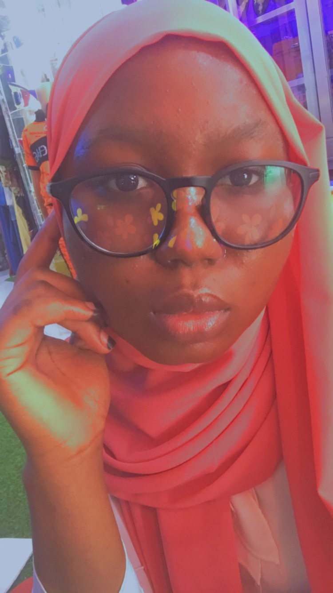

Farida Eleshin is a Junior at Ashesi university graduating in 2022. She is from Accra, Ghana and she loves writing and coding. She has a thing for Korean dramas and reality Tv shows. She's a movie fanatic too.
Nolbed Foundation – Adukrom, Kumasi Jun 2019 – Aug 2019 Development Intern • Analyzed students’ application and decided on the application status of applicants • Restructured the curriculum of students to include critical thinking and analysis
Coaching and Counselling Department Coaching, Counselling, and Advising Peer Support Sep 2019 – Jun 2020 • Helping freshmen in their transition into college • Coaching and counsel students in their times of need
Quantum Security Solutions Digital Marketing and Web Development using Squarespace Intern Jun 2020 – Aug 2020 • Researched on Digital Marketing Campaigns focusing on the best ones • Researched on the effective use of social media focusing on the best online platform for a cybersecurity company • Researched on the importance of the online presence of a cybersecurity company